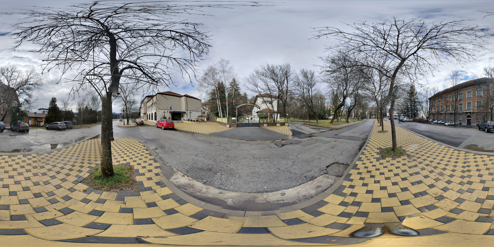
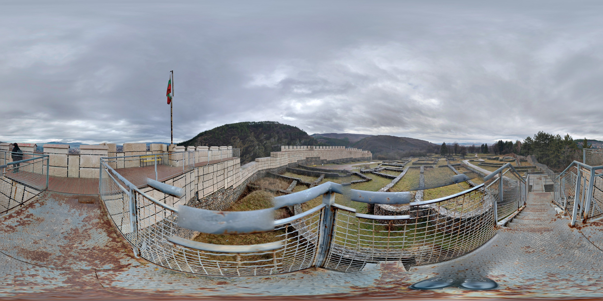
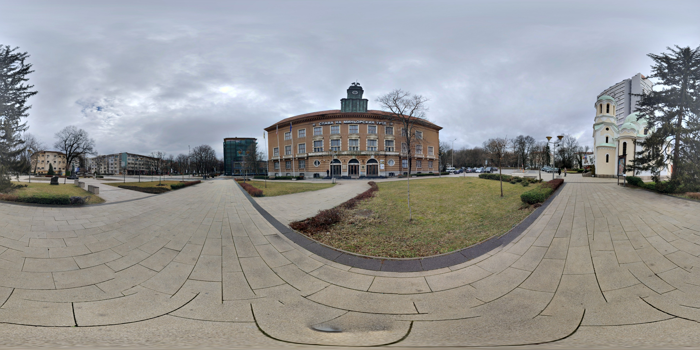
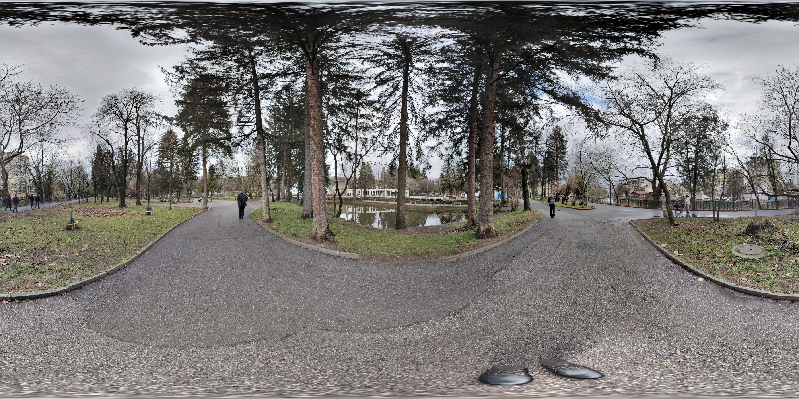

Перник – туристически гид
Начало
Забележителности
Любопитни факти
Транспорт
Места за хранене
Контакти
VR Турове
Църква Св.Иван Рилски
Минен и Исторически музеи

Крепост Кракра

Минна дирекция

Дворец на културата
Градски парк

✖
© 2025 PerNik360 • Образователен проект